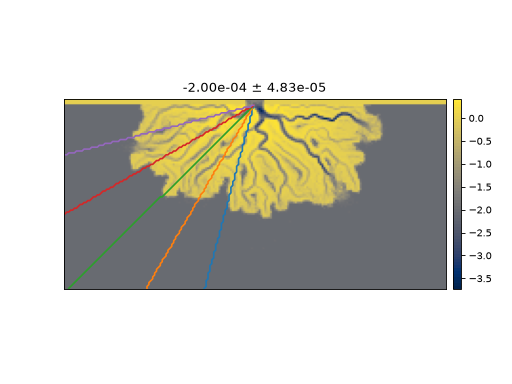

sandplover.plan.compute_topset_slope¶
- sandplover.plan.compute_topset_slope(elevation_data, origin=(0, 0), elevation_threshold=0, count_threshold=5, return_slopes=False, **kwargs)¶
Compute the slope of a fan or delta topset.
Algorithm uses equally spaced
RadialSectionto calculate the slope of input elevation_data that is above elevation_threshold.- Parameters:
elevation_data (array-like) – Input elevation data.
origin – Origin for
RadialSectionobjects, specified in data dimensions (not indices) along dim1, dim2 of the data. Default (0, 0).elevation_threshold (float, optional) – Elevation threshold for finding the topset. Commonly, this would be sea level. Default is 0.
count_threshold (int, optional) – How many pixels above sea level must be identified in order to fit a line. Default is 5 points.
return_slopes (bool, optional) – Whether to return the calculated slopes, in addition to the mean and standard deviation.
**kwargs – Passed to
_determine_equally_spaced_azimuths.
- Returns:
mean – Mean slope along all sections.
std – Standard deviation of slope along sections.
slopes – Array of slope values calculated along all sections. Returned only if return_slopes = True.
Examples
See also
See also some examples using compute_topset_slope in computations here: Radially-averaged topset slope.
To make a calculation with 5 equally spaced sections on the left half of the domain only:
>>> from sandplover.sample_data.sample_data import golf >>> from sandplover.section import RadialSection >>> from sandplover.plan import compute_topset_slope
>>> golf = golf() >>> >>> azimuth_kwargs = {"num": 5, "start": 90, "end": 180} >>> origin = ( ... np.array([golf.meta["L0"].data, golf.meta["CTR"].data]) ... * golf.meta["dx"].data ... ) >>> mean_slope, std_slope = compute_topset_slope( ... golf["eta"][-1, :, :], origin=origin, **azimuth_kwargs ... )
>>> # below is to visualize the sections >>> from sandplover.plan import _determine_equally_spaced_azimuths >>> azimuths = _determine_equally_spaced_azimuths(**azimuth_kwargs) >>> >>> fig, ax = plt.subplots() >>> golf.quick_show("eta", -1) >>> >>> for a, azimuth in enumerate(azimuths): ... a_section = RadialSection( ... golf["eta"][-1, :, :], ... azimuth=azimuth, ... origin=origin, ... ) ... ... a_section.show_trace(ax=ax) ... >>> >>> _ = ax.set_title(f"{mean_slope:.2e} $\pm$ {std_slope:.2e}")
(
Source code,png,hires.png)
To calculate the slope of a deposit, try something like:
>>> deposit_thickness = golf["eta"][-1, :, :] - golf["eta"][0, :, :] >>> deposit_thickness.data[deposit_thickness == 0] = np.nan >>> mean, std = compute_topset_slope( ... deposit_thickness, elevation_threshold=-np.inf ... )
{kind=link}
{kind=link}